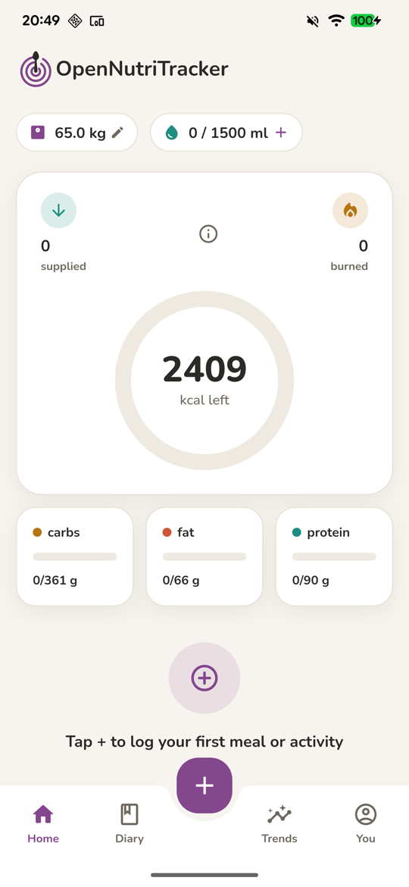
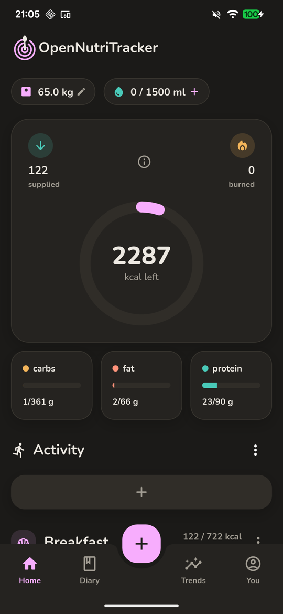
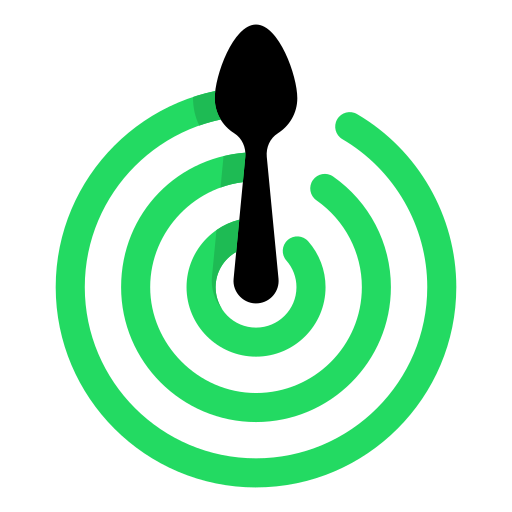
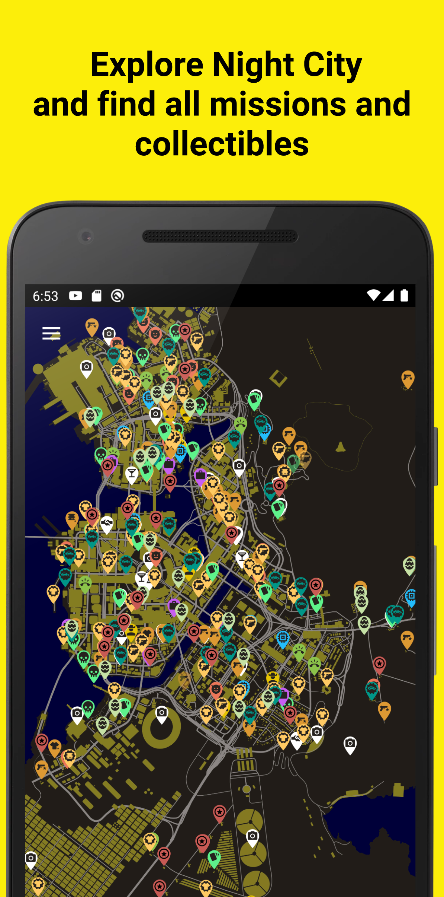
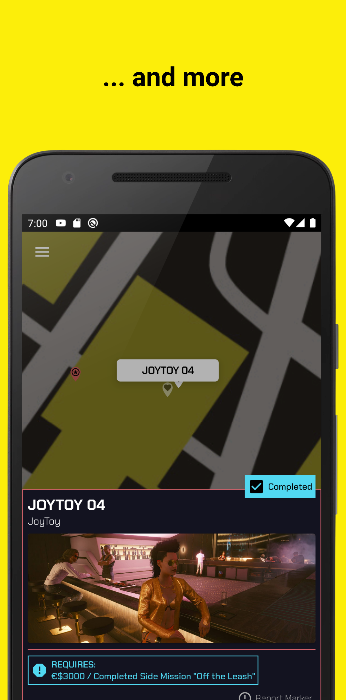
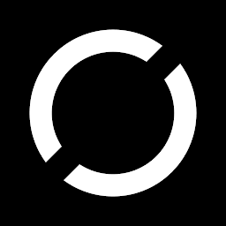

About
I'm a software engineer based in Regensburg, Germany, with around 10 years of coding experience. I'm currently building cross-platform apps at Krones.digital (SYSKRON), primarily with Flutter, and I care about clean code, solid performance, and interfaces that feel effortless to use.
I like taking apps end-to-end — owning the whole journey from requirement engineering, design, and conception through implementation and release, all the way to marketing and monetization.
My journey started at OTH Regensburg, where I focused on software engineering. Outside of work I'm an active open-source contributor — my main project is OpenNutriTracker, a free calorie tracker that's grown to over 2,000 stars on GitHub. These days I'm also experimenting a lot with AI.
Experience
Software Engineer · SYSKRON (Krones.digital) ↗
Building software for Krones.digital, part of the Krones Group. Focused on clean architecture, performance, and a polished user experience across several platforms.
Mobile App Developer (Intern) · Continental ↗
Interned on the mobile development team, developing native Android applications in Kotlin and contributing to internal tooling for automotive projects.
Education
M.Sc. Computer Science · OTH Regensburg ↗
Master of Science in Computer Science, with a focus on software engineering.
B.Sc. Computer Science · OTH Regensburg ↗
Bachelor of Science in Computer Science, covering the foundations of software engineering, algorithms, and software development.
Projects



OpenNutriTracker ↗
A free, open-source calorie and nutrition tracker built with Flutter, designed around simplicity and privacy. Log meals, scan barcodes, and track macro- and micronutrients.


NightCityMap ↗
A solo-developed, unofficial offline map and game companion for Cyberpunk 2077. Explore Night City to find missions, collectibles, iconic items, and gigs — and track your progress. Published on Google Play.

OTH App ↗
The official mobile app of OTH Regensburg, built with Flutter for Android and iOS. It gives students quick access to their timetable, canteen menus, campus navigation, bus departures, and university news from a customizable dashboard.
OpenMedRTC ↗
DeprecatedA telemedicine platform with a WebRTC-based Android client and a Kotlin signaling backend for real-time video consultations between patients and doctors. Built as a university project — no longer maintained.